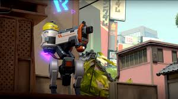
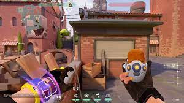

KILLJOY
Função: Sentinela
Biografia: Uma gênia alemã, Killjoy protege o campo de batalha com seu arsenal de invenções. Seu controle de área e dispositivos automáticos garantem que o inimigo nunca avance sem pagar o preço.
DISPOSITIVOS AUTOMÁTICOS
ROBÔ DE ALARME

Q - Um robô que persegue inimigos e explode, causando vulnerabilidade.
TURRET
E - Uma torreta automática que atira em inimigos em um cone de visão.
NANOENXAME
C - Granadas de nanorrobôs que ficam dormentes até ativação remota.
CONFINAMENTO

X - Um dispositivo que prende todos os inimigos no raio por 8 segundos.
ESTATÍSTICAS DOS DISPOSITIVOS
- Turret: 125 HP | 12dmg por tiro | 30m alcance
- Robô de Alarme: 60 HP | 60dmg + Vulnerável
- Nanoenxame: 45dmg por granada | 6m raio
- Confinamento: 200 HP | 15m raio
// SETUP RECOMENDADO
1. Posicione TURRET em ângulo protegido
2. Esconda NANOENXAME atrás de obstáculos
3. Use ROBÔ DE ALARME para flanquear
4. Guarde CONFINAMENTO para retakes
DICAS DE CONTROLE DE ÁREA
- Seus dispositivos desativam se você sair muito longe
- Nanoenxames são ótimos para post-plant
- Use o Robô de Alarme para limpar cantos
- Confinamento pode ser destruído - proteja-o!
- Recolha e reposicione dispositivos entre rounds